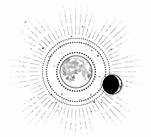

CAPÍTULO 19
Al día siguiente, Helena se obligó a salir al jardín. Necesitaba desesperadamente sentir algo de aire fresco, escapar del peso opresivo de la casa, pero, al abrir la puerta, la golpeó una brisa cálida de primavera que le inundó los pulmones con el aroma a tierra mojada y flores. Vio ramilletes de azafrán y campanillas de invierno asomándose entre la hierba muerta. Las parras negras que cubrían la casa estaban salpicadas de brotes verdes, y había bandadas de pájaros que piaban al surcar los cielos.
Era un paisaje precioso, pero ella lo sintió como una traición.
El mundo no debía seguir siendo bello. Debía estar muerto y frío, como un reflejo perenne de la vida miserable de Helena. Pero el mundo había seguido su curso, dando paso a una nueva estación, mientras ella no podía hacer lo mismo. Estaba atrapada eternamente en el invierno, en la estación de la muerte.
Se recluyó en la casa.
Cuando se abrió la puerta de su habitación por la tarde, sintió alivio al ver que era Stroud, y no Ferron, quien entraba.
Esta parecía de buen humor.
—Pensé que era mejor pasarme por aquí para ver si ha habido algún daño esta primera vez. No queremos que una infección se interponga en nuestro camino. ¿Has sangrado?
Helena no lo había comprobado, pero negó con la cabeza lentamente.
Stroud la miró de arriba abajo con curiosidad.
—Bueno, tienes más de veinte años. No siempre ocurre.
Helena intentó no reaccionar cuando Stroud le posó la mano en la pelvis, pero, al sentir cómo su resonancia se deslizaba por las partes más íntimas de su cuerpo, se puso a temblar descontroladamente.
—Lo más probable es que no comprobemos si estás embarazada hasta dentro de unas semanas, pero lo sabremos pronto. Se me da bastante bien detectarlo antes de tiempo. —Notó una sensación inquietante en el bajo vientre, como si se ajustara, y profirió un grito ahogado—. Sí, sin duda es el momento adecuado. Te he dejado lo más preparada posible.
A Helena se le erizó todo el vello hasta que Stroud se detuvo.
—Bueno, ¿cómo fue?
—Horrible —respondió Helena, apartando la mirada.
Stroud emitió un ruidito de compasión fingida.
—No me sorprende. Eres muy sensible.
Helena contempló la ventana con la mandíbula temblorosa.
Los labios de Stroud se estiraron como si fueran de plastilina. Dejó el expediente sobre la mesa y recorrió con los dedos el nombre de Helena y los números de otras dos prisioneras que figuraban en la portada.
—¿Sabes? Yo también estudié en la Torre de Alquimia. Fue años antes que tú, por supuesto. No tenía el repertorio ni el nivel de resonancia para seguir ascendiendo, pero me permitieron trasladarme al departamento de ciencia, donde me formé para ser auxiliar médica. Ahí fue la primera vez que escuché hablar de la vivemancia, aunque tardé años en darme cuenta del poder que tenía y en empezar a dominarla. Jamás me imaginé que sería una de las pocas vivemantes que lograrían sobrevivir a la guerra.
Helena no entendía por qué le estaba contando todo eso.
Stroud rebuscó en su maletín y sacó un frasco con pastillas. Partió una por la mitad.
—Abre la boca.
—¿Por qué? —preguntó Helena con los dientes apretados.
Stroud no respondió; se acercó y, usando los dedos y la resonancia para abrir la boca de Helena a la fuerza, le introdujo el trozo desmenuzado de pastilla y la obligó a tragárselo mientras se disolvía. Helena reconoció el sabor cuando le bajó por la garganta.
—Artemon Bennet salvó a gente como yo. Nos dio la oportunidad de poner a prueba nuestras habilidades, sin escondernos, y a estar orgullosos de ellas. —Stroud mantenía aún la mandíbula de Helena entre sus dedos, clavados firmes en la piel.
Helena sintió cómo Stroud estaba manipulando su fisiología, alterándola. Era algo totalmente distinto a lo que Ferron había hecho para aclimatarla a la casa. En lugar de experimentar desapego psicológico, notó un calor que ascendía lentamente, desde la superficie de la piel hasta lo más hondo.
Stroud siguió hablando:
—No digo que fuera perfecto. Bennet creía que los demás vivemantes eran demasiado idiotas para apreciar su inteligencia. —Arqueó unas cejas rubias—. Pero yo le serví sin dudarlo y aparté mis ambiciones personales para permanecer a su lado. Por eso sigo aquí, aunque todos siempre me hayan subestimado.
Helena intentó apartarse, pero la resonancia de Stroud estaba estrangulándole los nervios motores. Una tensión palpitante se encendió en su bajo vientre, y notaba la piel tan sensible que le dolía.
—Ya está. —Stroud la soltó, y Helena cayó de costado sobre la cama—. Ahora lo disfrutarás mucho más.
La chica se quedó inmóvil, incapaz de resistirse o de gritar mientras Stroud la colocaba en la cama, tumbada de espaldas y con las piernas abiertas.
«No, no, no».
—Le diré al Sumo Inquisidor que ya estás lista —dijo Stroud cuando se fue.
Helena esperó lo que le parecieron horas, mientras el deseo le calaba hasta los huesos. El cuerpo le pedía movimiento, caricias, fricción; era un ansia que se le metía bajo la piel.
Cuando Ferron llegó al fin, si hubiera podido moverse, se habría echado a temblar solo con la vibración de la puerta al cerrarse. Sin embargo, lo único que podía hacer era quedarse tumbada, mirándolo fijamente, suplicándole en silencio que se diera cuenta de que le pasaba algo.
Pero él no la miró. Tenía la vista perdida más allá, como si fuera transparente, mientras se quitó el abrigo y lo dejó en el sofá.
Helena lo observó moverse. De repente, su atención se volvió voraz y no podía apartar los ojos de todos los detalles del cuerpo del Sumo Inquisidor. La espera la había vaciado por dentro, dejándole un pozo de deseo insoportable que no dejaba de crecer.
Sabía que sus manos estarían calientes.
Se estremeció por dentro.
«Deja de pensar».
Cerró los ojos, pero el ansia que sentía le minaba su fuerza de voluntad.
La cama se movió. Sintió un escalofrío por la espalda. Ferron le subió la falda y el roce de la tela contra los muslos la hizo respirar con fuerza. Fue la única reacción que tuvo el valor de expresar.
—Respira —dijo Ferron, tal como había hecho la noche anterior.
Helena era plenamente consciente de su presencia, mucho más que el día anterior, pero ahora deseaba lo contrario. Apenas sintió su peso. Quería arquear la espalda, rozarse contra él, a pesar del grito incesante que escuchaba en su cabeza. Abrió los ojos y lo miró fijamente.
Era como si jamás lo hubiera mirado de verdad.
Siempre había existido una distancia clara y cautelosa entre ellos. Cuando lo observaba, lo hacía buscando indicios, debilidades. Nunca lo había contemplado como si fuera un ser humano o una criatura de sangre caliente.
Ahora se le antojaba muy humano. Quería que la tocara. Recordaba el tacto de sus manos, las yemas de sus dedos recorriéndole la mandíbula. Lo deseaba tanto que le ardía la piel. El peso del que tan desesperadamente había querido escapar la noche anterior… ahora lo deseaba.
Unas lágrimas ardientes le surcaron las sienes.
Por un instante fugaz, Ferron la observó de reojo antes de apartar la vista. Se quedó quieto y volvió a mirarla.
—¿Qué sucede? —preguntó.
Ella lo miró fijamente, implorando que la entendiera.
Ferron se apartó y se quitó un guante. Aún los llevaba puestos, incluso ahora.
Apenas la rozó, pero eso fue suficiente para deshacer la parálisis.
El cuerpo de Helena se estremeció y, acto seguido, se encogió sobre sí misma y emitió un sollozo ahogado. Juntó las piernas con fuerza, pero seguía notando una palpitación que le recorría todo el cuerpo. Empezó a respirar con dificultad, y hasta el aire le quemaba los pulmones.
—¿Qué te ha hecho?
No podía mirarlo a la cara.
—Me dijo que era para que fuese m-mejor. —Le temblaba la voz sin control—. Porque me… me quejé. ¿C-cuánto duran las pastillas que me diste la última vez?
—Ocho horas.
—Me ha dado media. —Dio una bocanada de aire—. ¿P-puedes cambiarlo?
—Cuando ya ha hecho efecto, no —respondió—. Tiene que pasarse solo.
Helena asintió. Lo había supuesto, pero tenía la esperanza de estar equivocada. Respiró hondo de nuevo.
—¿Podemos… podemos esperar hasta… después? —dijo con voz estrangulada.
Se produjo un silencio.
—Tengo que marcharme justo después de esto. No volveré hasta mañana por la noche.
Se tumbó, intentando ordenar sus pensamientos. Ya no confiaba en su propia razón.
Era eso o arriesgarse a no quedarse embarazada. A pesar de los embarazos no deseados que había tratado, sabía que los niños no llegaban simplemente así. Sus padres tardaron años en lograrlo; ella nació cuando ya se habían rendido. Un milagro, decían.
Dos meses, y después iría a la Central, con Stroud y…
Se estaba volviendo loca. No podía hacerlo. Una decisión así… No era justo que la obligaran a elegir entre esas opciones. Ninguna de ellas era buena; simplemente estaba eligiendo de qué forma quería odiarse para siempre.
Era lo más cruel que Stroud podría haberle hecho.
—Pues… hazlo ya —cedió, tumbándose de espaldas sin mirarlo.
Contempló el dosel de la cama y se obligó a pensar en otra cosa. La cama tardó en volver a moverse.
Helena jamás creyó que la segunda vez pudiera ser peor, pero fue mil veces peor. Ahora su cuerpo lo ansiaba.
Intentó cerrar los ojos, aunque se sentía inquieta y no conseguía mantenerlos cerrados. Se abrían de nuevo y volvía a mirar a Ferron, descubriendo detalles en los que nunca se había fijado. Sus mejillas y los ojos marcados, sus labios finos, la línea recta de su mandíbula, y cómo desaparecía su garganta pálida en el cuello de la camisa. Quiso que se acercara para poder aspirar su piel, para sentir el calor de otro cuerpo.
—Date prisa —dijo con los dientes apretados, obligándose a permanecer quieta.
No necesitaba lubricante, pero él lo aplicó igualmente. Helena arqueó la espalda hasta que se quedó mirando el cabecero, no dejaba de estremecerse. Enterró el rostro entre las manos y se mordió las palmas con violencia, a punto de venirse abajo.
Un gemido se ahogó en su garganta cuando Ferron se movió. Flexionó los dedos aferrándose al edredón con tanta fuerza que estuvo a punto de romperlo.
Sintió náuseas por el horror que la invadía. Odió cada fibra de su ser, por no poder controlar su propio cuerpo, por sentirse siempre asustada, débil y, ahora, anhelante. Pero no podía escapar. Tal vez Matias siempre tuvo razón: estaba en su naturaleza ser frágil.
Deseó poder escapar de su propio cuerpo, partirlo en pedazos y ver cómo ardían hasta dejar de ser humana.
Pero su cuerpo se contrajo en contra de su voluntad. Ferron emitió un jadeo desgarrador, y sintió que se incendiaba al oírlo. Notaba tanto su peso sobre ella que se le escapó un sollozo desesperado.
Ferron la penetró unas cuantas veces más y acabó con un gruñido torturado.
Al segundo, había desaparecido, retrocediendo, como si estuviera deseando huir de allí.
Helena abrió los ojos justo cuando él salía de la habitación.
Solo lo vio de soslayo, poco antes de que cerrara la puerta de un portazo, pálido y gris, como si estuviera a punto de desmayarse.
Se había ido. La habitación estaba vacía y ella se encontraba sola.
Se encogió de lado y sollozó, escondiendo el rostro entre las manos. La desesperación que ardía bajo su piel desapareció un poco al verse superada por el horror de lo que había ocurrido. Se arrastró al baño y vomitó hasta vaciarse por completo.
Helena siempre supo lo que era el sexo. En Etras, formaba parte de la vida, al igual que nacer y morir, pero en el Norte se vivía de otra forma. Era un tema que solía quedarse de puertas para dentro.
Los chicos podían meterse en problemas si iban a los distritos del placer, pero el deseo se consideraba una parte irreprimible de su naturaleza y un signo de su vitalidad, así que los castigos eran leves, más enfocados en que los hubieran pillado que en el acto en sí. Sin embargo, para las chicas había otra vara de medir, incluso para aquellas que vivían al margen de la sociedad tradicional de Paladia. Lumitia era una diosa virgen, pura y deslumbrante, y a las mujeres que se asociaban con su culto y las oportunidades que este brindaba se les exigía lo mismo.
La vida de Helena en la Academia giraba en torno a una beca que no solo dependía de su rendimiento académico, sino que incluía una estricta cláusula de moralidad. Helena se adhirió a ella con una devoción que superaba al sentimiento religioso, ya que le daban más miedo las consecuencias terrenales que las amenazas divinas. El miedo apagó cualquier tipo de deseo que pudiera sentir por alguien.
En ocasiones, pensaba que algún día, cuando hubiera saldado sus deudas y cumplido todas sus expectativas, cuando alcanzara sus metas, querría ser amada, y conocer qué significaba sentirse deseada.
Ahora lo único que conocía era esta vergüenza nauseabunda.
Cuando por fin se le pasó el efecto de la medicación, Helena se tumbó e intentó pensar en algo, cualquier cosa, pero no tenía mucho en lo que centrarse. Lo único que le quedaba por responder era por qué parecía ser una pieza en una conspiración laberíntica.
En el fondo, sí que entendía los motivos de Morrough y Stroud, por qué la consideraban útil, pero, por muchas vueltas que le diera, Helena no comprendía qué papel tenía Ferron en todo ello, aunque fuera la última persona en la que quería pensar. Al menos, replantearse sus razones políticas le impedía verlo como un ser humano.
Helena estaba convencida de que, de alguna manera, Ferron se había asegurado de que todo el mundo supiera que él era el Sumo Inquisidor. Quizá existieran circunstancias atenuantes, pero, si no hubiera deseado que el rumor se propagara, lo habría contenido. Quería que Paladia y los países de alrededor supieran que era Kaine Ferron.
¿Por qué? ¿Sería un intento de eludir los castigos de Morrough? ¿De convertirse en alguien más difícil de reemplazar? No. Debía haber algún motivo más importante.
Actualmente, Nueva Paladia estaba rodeada de enemigos.
La monarquía Novis, que se encontraba al este del río, tenía parentesco con los Holdfast; la madre de Luc era prima lejana de la reina. Parecía poco probable que Novis legitimara el Concejo de Gremios. Por otro lado, el país de Hevgoss, que se cernía sobre Paladia desde el oeste, tenía la costumbre de interferir de forma clandestina en los países cercanos para provocar crisis y tener una excusa para justificar su «intervención». Las intervenciones solían terminar con gobiernos gestionados por ellos.
Desde el principio, la Llama Eterna sospechó que Morrough era una marioneta de Hevgoss, pero parecía que algo, tal vez Helena, había agriado esa relación.
La economía y la legitimidad de Paladia dependían por completo de la alquimia, y la guerra había diezmado tanto a la población como la industria. Los recursos naturales y los siglos de investigación alquímica seguían existiendo, pero el país era débil y los lobos lo estaban cercando. Lo único que mantenía a raya las garras de los vecinos era el temor a los inmarcesibles, pero ese mito se había hecho añicos. Morrough había desaparecido de la esfera pública y el Sumo Inquisidor era la única autoridad visible.
Quizá Ferron estaba negociando en secreto con Hevgoss para derrocar a Morrough.
Por muy aterrador que fuese el Sumo Inquisidor, los Ferron eran una familia antigua que formaba parte de la historia de Paladia, incluso antes de que amasaran su gran fortuna. Los inmarcesibles gobernaban mediante el miedo, y los pocos ciudadanos de Paladia que seguían beneficiándose de ello cabrían en el salón de baile de Puntaférreo. La ilusión estaba llegando al clímax. Cuando se desmoronara, la gente buscaría a alguien que les resultara familiar, alguien con poder de quien pudieran enorgullecerse.
Y todo el mundo conocía el poder revolucionario del acero. Los Ferron habían forjado la era industrial.
A estas alturas, si Ferron usurpaba el trono de Morrough, los paladinos lo verían como un salvador. Podrían culparlo de la mayoría de las atrocidades que había cometido y asumir la responsabilidad de aquellas que les resultaran convenientes.
Hasta donde sabía Helena, Ferron no tenía rivales. Greenfinch era poco más que una marioneta, y el Concejo de Gremios, un simple chiste. Ferron era el único apoyo real de Morrough.
Eso explicaría por qué el Sumo Nigromante lo torturaba sin descanso: le guardaba rencor porque, al fin y al cabo, le estaba fallando hasta su propia inmortalidad. Dependía totalmente de Ferron, y no tenía a nadie más a quien acudir.
Aun así, Helena tenía la sensación de que se le escapaba algo.
¿Qué pintaba ella en los planes de Ferron?
Fueran cuales fuesen sus maquinaciones, ella sabía que debía tener un papel en ellas. Estaba demasiado obsesionado con su bienestar. Ferron dedicaba unos esfuerzos considerables a asegurarse de que ella se encontrase bien, aunque siempre intentaba disimularlo.
Recordó cómo dudó cuando le pidió que la matara. Se lo había pensado. ¿Por qué? Si era una parte esencial de su plan, ¿por qué consideraba la opción de matarla? Pero, si no lo era, ¿por qué entonces se esforzaba tanto?
Era de noche cuando Ferron regresó. Al entrar en la habitación, ambos se miraron fijamente, pero ninguno de ellos habló.
No había nada que decir.
Él se dio la vuelta, se colocó una pastilla bajo la lengua y, al girarse de nuevo, tenía la mirada perdida.
Helena se tumbó con los ojos clavados en el dosel de la cama.
No se inmutó cuando sintió que la cama se hundía bajo su peso. No emitió ningún ruido cuando le levantó la falda hasta la cintura. Le tocó la entrepierna, y Helena siguió mirando hacia arriba con tanta concentración que se le nubló la vista.
Cuando la penetró, profirió un grito ahogado y giró la cabeza hacia la pared, retorciéndose de angustia.
Su cuerpo se había anticipado. Al igual que la medicación la había aclimatado a la casa, también la había habituado a esto.
Era una traición en lo más profundo de su ser.
Pensó en empujarlo. Si la forzaba físicamente, si la sujetaba o la paralizaba, tal vez se odiaría menos a sí misma.
Pero estaba harta de sufrir, así que no se movió.
Cuando hubo terminado, Ferron se marchó sin decir nada. Ella no se atrevió a mirarlo a la cara.
Tras cinco días, la puerta permaneció cerrada y la casa se sumió en el silencio. Por fin se había acabado, pero Helena apenas sintió alivio.
Se estaba volviendo loca. La ansiedad la estaba quebrando, se desmoronaba, consumida por la jaula que la mantenía con vida.
¿Y si funcionaba? ¿Y si no?
No sabía qué le aterraba más.
Conforme el día se alargaba hasta la noche, Helena empezó a sentirse más inquieta. No comprendió el motivo hasta que la oscuridad cayó solo durante un instante, para luego dar paso a una luz abrasadora.
Lumitia había llegado a la sublimación plena. El mundo exterior estaba bañado por una luz plateada, casi tan brillante como el día, que se extendía sobre el cielo negro. No había estrellas ni planetas. Luna, suspendida a media altura, parecía un trozo de cerámica rota en comparación.
La lenta órbita de Lumitia hacía que solo alcanzara la plenitud dos veces al año, en primavera y en otoño, para luego entrar en fase de latencia durante el verano y el invierno.
Las fases de sublimación ejercían un gran efecto sobre los alquimistas.
Para quienes tenían poca resonancia, el punto álgido de la sublimación era el único momento del año en el que podían transmutar, mientras que los alquimistas más poderosos solían desorientarse bajo su fulgor, un estado que la gente llamaba borrachera de luna.
La sublimación ejercía una influencia aún mayor en los paladinos. Según la Fe, se debía a su conexión más profunda con los dioses. Luc y Lila alcanzaban un grado de ebriedad tal que les costaba caminar en línea recta, mientras que Helena (como extranjera infiel que era) solo sentía un poco de ansiedad, un temor pesado que la hundía.
Aquella noche, la cena no apareció.
Era la primera vez en todos los meses de cautiverio que no recibía comida.
Algo iba mal. Aunque hubiera Ascendencia, los necrómatas debían estar presentes, activos de algún modo. Se asomó al jardín y vio a los dos que custodiaban las puertas, inmóviles como estatuas. Pero no se oían pasos al otro lado de la puerta y, cuando salió de su habitación, no apareció nadie.
Helena se dirigió al vestíbulo y siguió el rastro de plata que dejaba Lumitia, esperando a cruzarse con alguno en cualquier momento. Las sombras eran negras como la tinta y contrastaban con la luz brillante y blanca.
El vestíbulo estaba vacío; el mármol blanco parecía resplandeciente bajo la luz de la luna. El dragón uróboro del suelo brillaba como si tuviera escamas; su cuerpo oscuro relucía entre el mármol blanco.
El peso de Lumitia era opresivo. Sentía la resonancia correteando por sus venas, como si quisiera destruir la anulación, como si estuviera en una jaula demasiado estrecha incluso para moverse.
Estudió la casa en busca de algún signo de movimiento. Los necrómatas no requerían un mantenimiento constante. Según los estudios, una vez que recibían órdenes, las ejecutaban en bucle hasta el infinito. Incluso si Ferron estaba ebrio por la sublimación, deberían funcionar como siempre.
A menos que estuviera muerto…
Helena se detuvo en seco. ¿Y si la Llama Eterna había aprovechado el punto álgido de la sublimación para matarlo? Los inmarcesibles de la fiesta decían que el asesino era como un fantasma, que entraba y salía sin dejar más rastro a su paso que un cadáver.
Escudriñó a su alrededor con más atención. La combinación del intenso resplandor plateado y el negro que la rodeaba la marearon de camino a la puerta principal.
Le temblaban los dedos al alcanzar el pomo. No se podía abrir. Movió el pestillo que había debajo del pomo, pero no se movió nada. Tiró con fuerza, ignorando el dolor que se extendió por sus brazos, y trató de abrir la puerta, aunque no lo consiguió. La habían cerrado a cal y canto.
Se le encogió el pecho, y se obligó a ir hacia la otra puerta que daba al exterior. Tampoco estaba abierta.
Recorrió la casa, respirando con más rapidez con cada puerta que encontraba cerrada.
¿Estaría Ferron muerto en alguna parte de Puntaférreo? ¿Iba a encontrar su cadáver? Se preparaba mentalmente antes de entrar en una habitación, convencida de que descubriría sangre entre las sombras.
Pero la Llama Eterna no la habría abandonado. Si hubieran venido, habrían dejado una puerta o una ventana abierta. Le concederían esa ventaja, al menos.
Solo tenía que encontrarla.
Probó con otra puerta. Tiró y tiró hasta que un dolor punzante le recorrió el brazo y le dejó la mano dormida.
Cuanto más buscaba, más convencida estaba de ello: Ferron estaba muerto. La habían dejado atrapada y sola en esta casa.
Stroud no tardaría en venir a por ella. La llevarían a la Central y, si no estaba embarazada, encontraría a alguien que la violara.
Se le estaban durmiendo los brazos, cada vez sentía la cabeza más mareada. Subió al segundo piso y recorrió el pasillo. Siempre había evitado esa parte de la casa porque era donde estaban las habitaciones de Ferron y de Aurelia.
Si Ferron estaba muerto, tenía que verlo con sus propios ojos. Debía averiguarlo o la incertidumbre la atormentaría.
Llegó a la primera puerta a mano izquierda y respiró hondo para tranquilizarse lo suficiente antes de agarrar el pomo.
La abrió en silencio.
La habitación estaba sumida en la oscuridad. La luz de la luna se derramaba como un río de plata a través de las ventanas. Miró la cama: estaba vacía.
En cuanto cruzó el umbral, el aire cambió.
Se giró rápidamente hacia el escritorio. La habitación estaba en penumbra y en el borde solo había unas botellas. Entonces, una sombra se movió y la luz de la luna iluminó la cara de Ferron, reflejándose en su cabello y su piel pálida, como si centelleara.
—Helena —susurró.
Ella se quedó paralizada, no sabía si debía sentir alivio o miedo.
Jamás la había llamado de ninguna forma. En todos los meses que llevaba en Puntaférreo, solo se había referido a ella como «la prisionera». Stroud la llamaba Marino, pero Ferron jamás la había nombrado. Hacía mucho tiempo que no escuchaba a nadie decir su nombre.
—Yo… —Se sintió estúpida—. Creí que estabas muerto.
Debió dar la vuelta y marcharse, pero Ferron parecía tan fantasmal que no consiguió apartar los ojos de él. La expresión de su rostro era de una desesperación absoluta, pero, cuando la miró, los ojos revelaban un sentimiento voraz.
Se levantó lentamente. Parecía moverse con una soltura que no era propia de él. Helena miró el escritorio que había dejado atrás y lo comprendió.
Estaba borracho, demasiado ebrio, tanto por la influencia de Lumitia como por la ingesta de alcohol. Al regenerarse tan rápido, probablemente necesitaba de ambos estímulos.
Cuando se acercó, Helena intentó retroceder, pero entonces chocó con la pared y no tuvo adónde ir. Ya no había espacio que los separara.
Ferron levantó una mano pálida y le envolvió la garganta con los dedos.
Tenía los ojos negros, aunque aún se distinguía la plata por el borde. Se le desbocó el pulso cuando la miró a los ojos.
No le extrañaba que los sirvientes hubieran desaparecido. Tal vez todo el mundo sabía que era mejor esconderse de él en noches como esa, todos menos ella.
—Ah, Marino. —Le pasó el pulgar por el cuello, recorriendo la cicatriz que tenía bajo la mandíbula—. Si hubiera sabido el dolor que me ibas a causar, jamás te habría dejado venir.
Suspiró, y Helena percibió el olor a licor en su aliento cuando Ferron inclinó la cabeza hacia ella. No tenía ni idea de qué quería decir o si debía disculparse.
—Pero, a estas alturas, supongo que merezco arder. Me pregunto si tú arderás también conmigo.
Su rostro estaba tan cerca que sus palabras rozaron los labios de Helena, y su boca se estampó contra la suya.